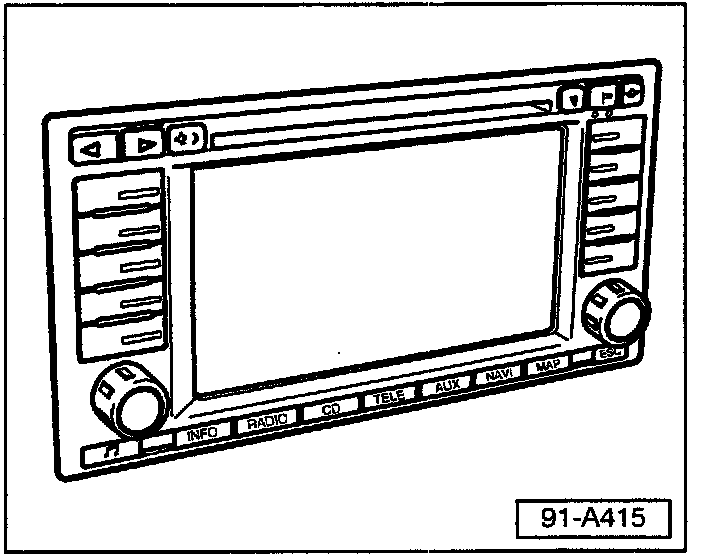
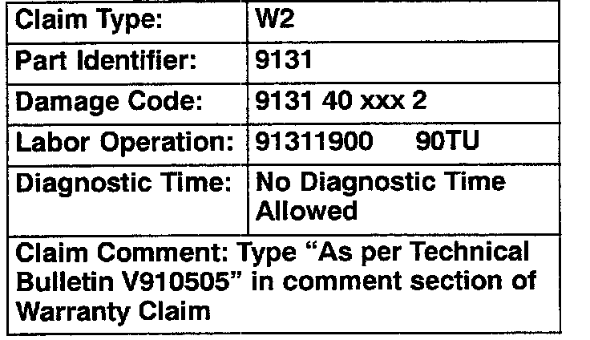

Audio System - Insufficient bass Output
Group: 91Number: 05-05
Date: Oct. 21, 2005
Subject:
Radio, Insufficient Bass Output
Model(s):
Touareg with Radio Navigation 2004 > 7L94D015720
System (Sound II)
Supersedes T.B. Group 91 number 04-06 dated May 17, 2004 due to Removal from Required Vehicle Updates Category.
Condition
Radio system exhibits insufficient Bass (low frequency) output.
Production
New radio amplifier as of VIN: 7L94D015720.
Service
Tip:
Do Not complete this technical bulletin if OTIS shows the BE code is complete.
Part numbers listed in this bulletin are for reference only. Always check with your Parts Dept. for the latest parts information.
Procedure:

- For vehicles with insufficient radio bass output, which are equipped with radio! navigation system (Sound II), built prior to VIN: 7L94D015720:
- Replace with new radio amplifier, Part No. 7L6 035 466. See Repair Manual, Repair Group 91, Amplifier, Removing and Installing.

When procedure applies to vehicles within the New Vehicle Limited Warranty, use the table.